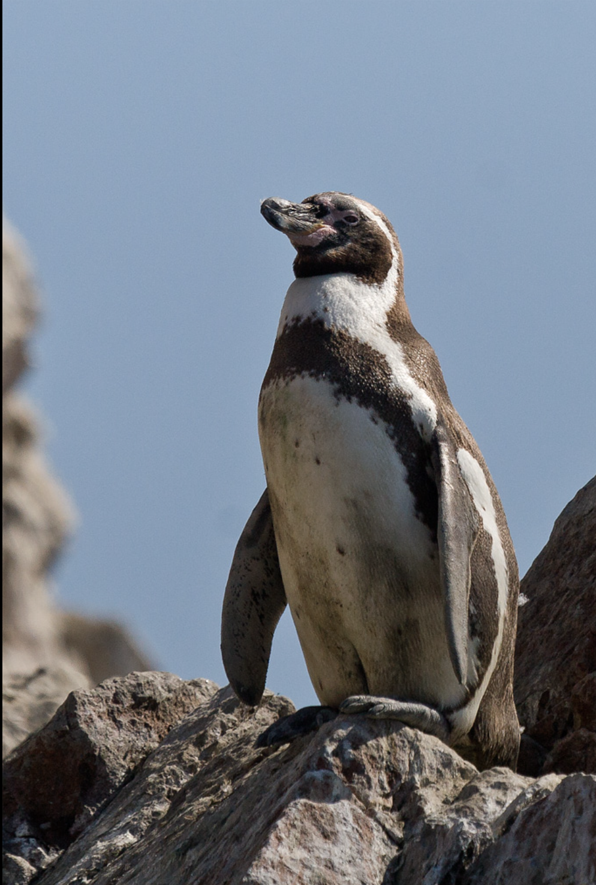
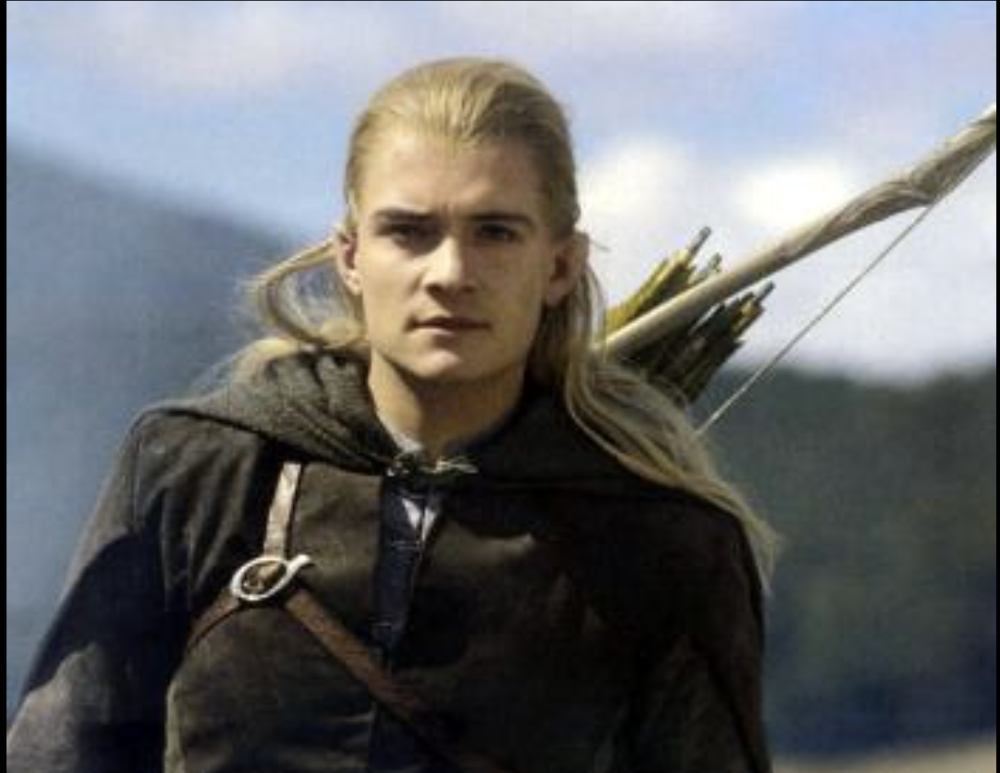

 
This is a page all about me. I've included only the most pertinent details and relevent information. I hope you enjoy your stay.
I have lots of experiences, like making this website. I've never made one of these before. I'll probably never sit in my room and make a website while listening to Enya and eating chocolate-covered almonds from Costco ever again. #YOLO. #OrinocoFlow Почему программисты так не любят природу? Потому что в ней слишком много багов!
Some achievements include winning a marathon, volunteering at an orphanage, and benching 250. I have none of these achievements. какой лучший способ поймать робота? с помощью ботнета!
It is interesting that there are lots of interesting things to be interested in. Etymology, entomology, and croquet are popular choices. I am interested in what grade I'll get on this project. It took me a few hours, but you wouldn't know it looking at this page. Как компьютер напивается? Он делает скриншоты.
These are my real results: there was no cheating. I got Legolas from Lord of the Rings. I am an apple. (You probably noticed that a low-quality internet picture of an apple is conspicuously missing from this page's photo lineups. This is an intentional deprivation intended to protest misconceptions about the existence of apples that fall too far from the tree.) The penguin species I am most like is the Humboldt penguin. (These are the ones that live on the seaside cliffs of Peru and Chile. Who knew?) Какая любимая закуска у компьютера? Микрочипы!